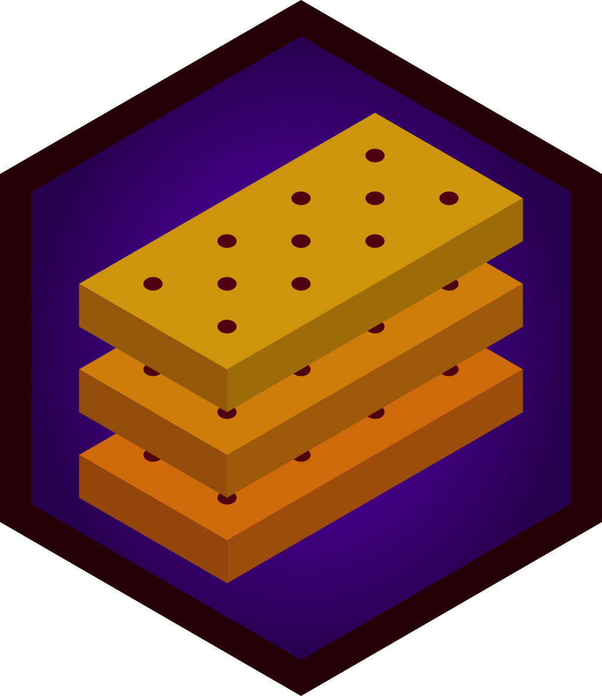
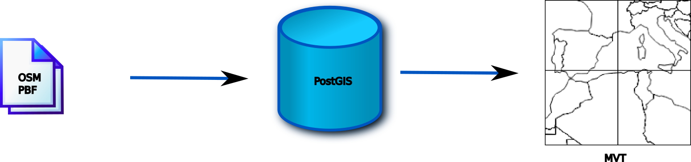
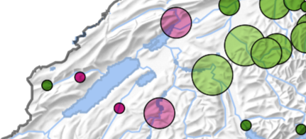
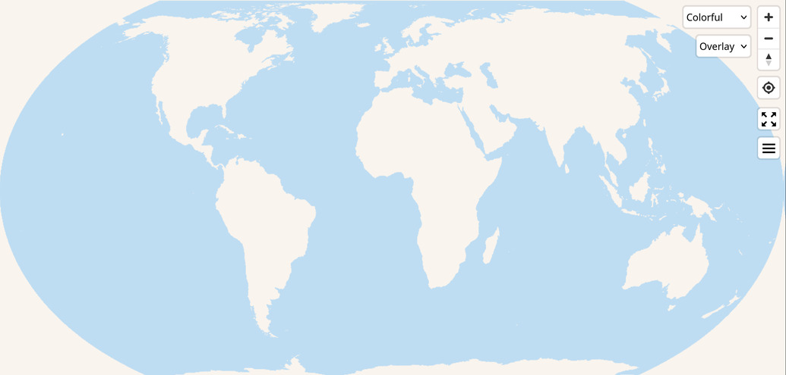

Customizing Shortbread vector tiles
Pirmin Kalberer @implgeo
FOSS4G 2024 Belém
About me
Lazy mapper (55 changesets in 15 years)
FOSSGIS e.V. board (German OSM chapter)
GIS developer
- Sourcepole, Switzerland
- t-rex tile server -> BBOX
Shortbread schema
- Basic, lean, general-purpose vector tile schema for OSM data
- CC0 licensed
- shortbread-tiles.org

History
- Created for Geofabrik by Thomas Skowron, Christine Karch, Amanda McCann and Michael Reichert
- Experimental downloads by Geofabrik, Mapnik style
- Versatiles maps with three styles (Unlicence/CC0)
- Handed over to community (PSC) at Karlsruhe Hack Weekend 2/2024
- osm.org vector tiles with minutely updates
Schema specification
Schema overview
- Water
ocean,water_polygons,water_lines,water_lines_labels,…
- Countries, States, Cities
boundaries,boundary_labels,place_labels
- Land Use, Land Cover, Buildings
land,sites,buildings,addresses
- Streets and Transport
streets,street_labels,bridges,aerialways,ferries, …
- Points of interest
public_transport,pois
Shortbread styles
Versatiles Colorful

colorful, full featured map
Versatiles Graybeard
gray, full featured map
Versatiles Neutrino

light basemap
Viewer
- MapLibre GL
- OpenLayers (ol-mapbox-style)
- Leaflet (maplibre-gl-leaflet plugin)
- deck.gl (MVTLayer), kepler.gl
Tile creation workflows
PBF → Vector tiles

- tilemaker (tilemaker.org)
- Planetiler (github.com/onthegomap/planetiler)
PBF → DB → Vector tiles

- osm2pgsql (osm2pgsql.org)
- BBOX (t-rex) (www.bbox.earth)
- Tilekiln (github.com/pnorman/tilekiln)
Tile storage
- Files / S3
- MBTiles + tile service
- PMTiles
- DB cache + tile service
tilemaker
- Configs for OpenMapTiles and Shortbread schema
- JSON configuration with Lua scripts
- Output formats: MBTiles, PMTiles
- No diff support
Shortbread with tilemaker
git clone https://github.com/shortbread-tiles/shortbread-tilemaker
cd shortbread-tilemaker
# Download additional data (water polygons, etc.). Requires ogr2ogr!
./get-shapefiles.sh
# Download OSM extract
curl -sSfO --output-dir data https://download.geofabrik.de/europe/liechtenstein-latest.osm.pbf
docker run --rm -v $PWD:/var/tm -w /var/tm versatiles/versatiles-tilemaker \
tilemaker --config config.json --process process.lua \
--input data/liechtenstein-latest.osm.pbf --output data/shortbread.pmtilesPlanetiler
- Configs for OpenMapTiles and Shortbread schema
- YAML configuration or Java application
- Output formats: MBTiles, PMTiles
- No diff support
- Extremely fast: Planet in 22m
Shortbread with Planetiler
osm2pgsql
- Flex mode: configuration with Lua scripts
- Osm2pgsql Themepark with Shortbread config
osm2pgsql-genfor generalization in databaseosm2pgsql-replicationfor incremental updates- Config generation for tile servers
Shortbread with osm2pgsql
git clone https://github.com/osm2pgsql-dev/osm2pgsql-themepark.git
# Start database
docker run -d --name postgis -p 127.0.0.1:5432:5432 \
-e POSTGRES_DB=osm -e POSTGRES_USER=osm -e POSTGRES_PASSWORD=osm postgis/postgis
# Download OSM extract
mkdir data
curl -sSfO --output-dir data https://download.geofabrik.de/europe/liechtenstein-latest.osm.pbf
# Import OSM extract
docker run --rm --network=host -v $PWD/osm2pgsql-themepark:/osm2pgsql-themepark:ro -v $PWD/data:/data \
-e LUA_PATH="/osm2pgsql-themepark/lua/?.lua;;" \
-e PGHOST=127.0.0.1 -e PGUSER=osm -e PGPASSWORD=osm iboates/osm2pgsql:1.11.0 \
osm2pgsql -d osm -S /osm2pgsql-themepark/config/shortbread_gen.lua -O flex --slim \
/data/liechtenstein-latest.osm.pbfosm2pgsql generalization
# Download and import additional data (water polygons, etc.). Requires ogr2ogr!
PGHOST=127.0.0.1 PGUSER=osm PGPASSWORD=osm ./osm2pgsql-themepark/themes/external/download-and-import.sh \
data osm oceans ocean
# Generalize
docker run --rm --network=host -v $PWD/osm2pgsql-themepark:/osm2pgsql-themepark:ro \
-e LUA_PATH="/osm2pgsql-themepark/lua/?.lua;;" \
-e PGHOST=127.0.0.1 -e PGUSER=osm -e PGPASSWORD=osm iboates/osm2pgsql:1.11.0 \
osm2pgsql-gen -d osm -S /osm2pgsql-themepark/config/shortbread_gen.luaosm2pgsql updates
BBOX
- Generate and serve vector tiles
- OGC API services
- Raster and vector tiles
- PostGIS, MBTiles, PMTiles, S3
- Non-Mercator tile grids
- Successor of t-rex tile server
Serve shortbread tiles from PostGIS
- Set
local BBOX = trueinshortbread_gen.lua - Change
write_config('bbox-config.toml')towrite_config('/data/bbox-config.toml')when running with Docker - Run
osm2pgsql - Serve tiles on http://localhost:8080/xyz/osm.style.json
Tilekiln
- Generate and serve vector tiles
- Data source: PostGIS
- Caching tiles in PostgreSQL
- Quickstart
Customize Shortbread
Use cases
- Custom style
- Additional POIs
- Route relations
- More tags for special objects
- Additional tags for streets or buildings
- Other / more languages
Styling
Mapbox / MapLibre GL JSON: https://maplibre.org/maplibre-style-spec/
{
"source": "birddata",
"source-layer": "change_increase",
"type": "circle",
"paint": {
"circle-radius": {
"property": "code",
"stops": [
[1, 5],
[2, 10],
[3, 15]
]
},
"circle-stroke-color": "#000000"
}
},
Style editor
Maputnik Editor (maplibre.org/maputnik)

Versatiles Styler

Extending Shortbread
- tilemaker config (JSON, Lua)
- Planetiler config (YAML, Java)
- osm2pgsl config (Lua)
Tileset combinations
- Extended base map tiles
- No additional tiles
- Can break base map styles
- Selfhosting required
- Additional tilesets
- Additional tile source in style
- No easy relation to base map tiles
- Potential duplication of data
Server-side combination
- Vector tiles can be concatenated by server
- Requires a service
- Not supported by all tile servers
- Caching more difficult
Publish custom tiles
PMTiles, style and sprites
# Generate Shortbread tiles
docker run --rm --user=$UID -v $PWD/data:/data ghcr.io/onthegomap/planetiler shortbread.yml \
--download --area=liechtenstein --output=/data/shortbread.pmtiles
# Download Versatiles Styles + Assets
mkdir -p styles assets/sprites
wget -O - https://github.com/versatiles-org/versatiles-style/releases/latest/download/styles.tar.gz | tar xz -C styles
wget -O - https://github.com/versatiles-org/versatiles-style/releases/latest/download/sprites.tar.gz | tar xz -C assets/sprites
# Replace tile source with PMTiles URL
jq '.sources."versatiles-shortbread".url="pmtiles:///shortbread.pmtiles" | del(.sources."versatiles-shortbread".tiles)' \
styles/colorful.json > styles/colorful-pmtiles.json
# Make sprite URL relative
sed --in-place -e 's!https://tiles.versatiles.org/assets/sprites!/assets/sprites!g' styles/*.jsonViewer HTML
index.html:
<!DOCTYPE html>
<html>
<head>
<title>MapLibre Viewer</title>
<script src='https://unpkg.com/maplibre-gl@4.5.0/dist/maplibre-gl.js'></script>
<link href='https://unpkg.com/maplibre-gl@4.5.0/dist/maplibre-gl.css' rel='stylesheet' />
<script src="https://unpkg.com/pmtiles@3.0.6/dist/pmtiles.js"></script>
<style>
body { margin: 0; }
#map { height: 100vh; width: 100vw;}
</style>
</head>
<body>
<div id="map"/>
<script>
let protocol = new pmtiles.Protocol();
maplibregl.addProtocol("pmtiles", protocol.tile);
var map = new maplibregl.Map({
container: 'map',
style: 'styles/colorful-pmtiles.json'
});
</script>
</body>
</html>Deploy and serve
# Upload to site supporting HTTP Range Requests
scp -r . example.com:
# Or deploy to a hosting provider like Github pagesExample

MapLibre with Shortbread PMTiles.
Wrapup
- Creating custom maps got much easier
- Keep tiles small
- Don’t break base map styles
- Discuss core extensions in shortbread-docs repo
- Mashups are cool again!
Thank you
Pirmin Kalberer